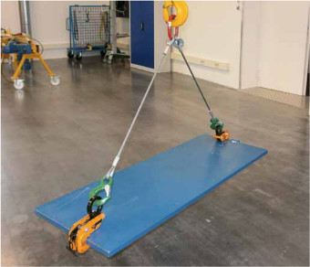

Zum Transport senkrecht hängender Blechtafeln verwendet man lastschließende Hebeklemmen. Es ist vorgeschrieben, dass lastschließende Hebeklemmen eine Verriegelung haben müssen.
Der Greifbereich ist auf dem Typenschild angegeben. Nur im angegebenen Greifbereich und nur bei bestimmungsgemäßem Gebrauch ist ein sicherer Transport möglich. Niemals mehr als ein einzelnes Blech transportieren!
Die Klemmen benutzt man paarweise, sonst pendelt das Blech. Die Außenseiten der Greifrillen können dann sehr schnell verschleißen; die Kanten können ausbrechen.
Vor dem Transport sind die Klemmen zu verriegeln.
Für den Transport unterschiedlicher Profile und auch von Eisenbahnschienen gibt es eine Vielzahl von Sonderklemmen, die nicht alle eine Einrichtung gegen selbstständiges Lösen der Last besitzen. Diese Klemmen wurden für Sonderzwecke konstruiert und haben zum Teil zusätzlichen Formschluss. Sie sind nur für das passende Profil geeignet.
Auch für den Transport waagerecht hängender Bleche werden verriegelbare Klemmen empfohlen, denn dünne Bleche neigen zum Durchhängen und Schwingen. Nicht verriegelte Klemmen könnten abgeschleudert werden (Bild 13-1).

Bild 13-1: Blech horizontal sicher transportiert
Die Greiffunktion von Hebeklemmen hängt entscheidend vom Zustand der Klemmteile, des Gehäuses, der Öse, der Verbindungsteile, der Bolzen, ggf. der Feder bzw. der Sicherheitseinrichtungen ab. Hebeklemmen müssen daher durch regelmäßige Prüfungen auf Schäden geprüft werden, spätestens nach einem Jahr.
Die Prüfungen beziehen sich auf den Zustand, die Vollständigkeit und Wirksamkeit der Sicherheitseinrichtungen sowie auf Beschädigungen, Verschleiß, Korrosion, Kantenausbrüche, Risse und sonstige Veränderungen der erwähnten Bauteile. Zur Prüfung ist die Klemme so zu demontieren, dass innen liegende Verschleißteile sichtgeprüft werden können. Zusätzlich fixiert man das bewegliche Klemmteil und spürt an der Aufhängeöse beim Hin- und Herziehen von Hand das Spiel. Sofern vom Hersteller keine Angaben zur zulässigen Abnutzung der einzelnen Klemmenbauteile zu erfahren sind, ist als Richtwert für die zulässige Abnutzung, z. B. von Bolzen, Aufhängeösen oder sonstigen tragenden Teilen, eine Minderung der Querschnittsmaße um 5% anzusetzen.
Da beim Transport immer gleicher Bleche z. B. nur ein Zahn verschleißt, muss hier bei der Sichtprüfung sehr sorgfältig vorgegangen werden. Im Zweifelsfall ist für die Ermittlung der Verschleißgrenze der Klemmteile von Klemmen zum Heben hängender Blechtafeln ein Pendelversuch sinnvoll. Dabei wird ein Prüfblech mit nur einer zu prüfenden Klemme aufgenommen.
Bei der Dicke des Prüfbleches ist von den ungünstigsten Randbedingungen auszugehen: Gewicht des Bleches ca. 10 bis 30% der Tragfähigkeit, härtestes Blech wie es im Betrieb umzuschlagen ist, mit glatter Oberfläche. Dabei ist möglichst ein Blech im untersten Greifbereich der Klemme zu benutzen. Mit einem Hilfsseil wird das aufgenommene Blech aus sicherer Entfernung um ca. 30° ausgelenkt und losgelassen; sodann auspendeln lassen. Anschließend wird es auf Rutschmarken untersucht. Rutschmarken oder das Herausfallen aus der Klemme während des Pendelns zeigen, dass die Klemmteile ausgetauscht werden müssen.
Zur Überwachung des nächsten Prüftermins ist das Führen einer Karteikarte und Benummerung der Klemmen oder das Anbringen einer Prüfplakette sinnvoll.
Die Prüfung ist mit einem Prüfungsbefund zu dokumentieren, mit Datum der Prüfung, festgestellten Mängeln, Beurteilung, ob Bedenken gegen den Weiterbetrieb (ggf. bis zur Lieferung der Ersatzteile) bestehen und Angaben über evtl. notwendige Nachprüfungen sowie Namen, Anschrift (bei Fremdfirmen) und Unterschrift der befähigten Person.
Hinweis:
Bei augenfälligen Mängeln während der Benutzung: Prüfung durch befähigte Person
oder sofort Instandsetzung veranlassen!